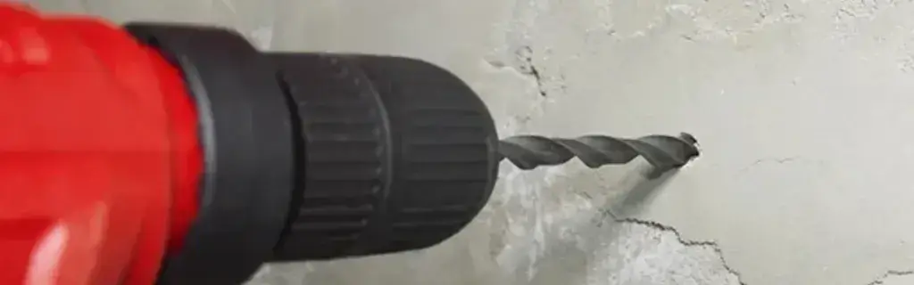

Bor Tembok: Mengungkap Rahasia Kekuatan Fitur Hammer dan Pilihannya untuk Proyek Anda
Dipublikasikan pada 31 Juli 2025

Saat melintasi proyek bangunan, Anda pasti akan melihat beragam jenis alat yang digunakan. Dari molen pencampur semen, gerinda, berbagai jenis tangga, palu, hingga bor tembok. Alat-alat ini ditenagai oleh manusia, mesin bensin, atau listrik. Kali ini, yuk kita bedah lebih dalam tentang bor tembok!
Bagi Anda yang berkecimpung di bidang konstruksi, alat satu ini tentu sudah tak asing lagi. Bor tembok hadir dengan berbagai spesifikasi, harga, dan merek. Tim Mas Tukang pernah mencoba sebuah bor tembok listrik yang dibanderol sekitar Rp 400.000 hingga Rp 500.000 di toko perkakas. Untuk ukuran sebuah bor tembok, harga ini terbilang cukup terjangkau, lho!
Spesifikasi Bor Tembok Listrik dan Kapasitas Pengeboran
Bor listrik yang kami coba ini membutuhkan daya sebesar 650 Watt dengan voltase 220 Volt dan mampu mencapai kecepatan putar hingga 3.100 rounds per minute (RPM). Karena menggunakan tenaga listrik, bor ini tentu akan terhubung dengan kabel. Berita baiknya, bor tembok ini sangat serbaguna dan dapat digunakan pada berbagai bidang bangunan, termasuk yang terbuat dari logam, beton, hingga kayu. Menarik, bukan?
Berdasarkan deskripsinya, bor tembok ini memiliki kapasitas yang beragam tergantung material yang digunakan. Misalnya, saat digunakan pada logam, kapasitas maksimalnya adalah 10 mm. Namun, kapasitas maksimal bor akan sedikit meningkat menjadi 13 mm jika digunakan pada beton. Sementara itu, saat bor digunakan pada kayu, kapasitas maksimalnya melonjak drastis hingga 25 mm. Lantas, apa dampaknya jika bor digunakan di atas kapasitas maksimalnya? Jika ini terjadi, performa mesin bor bisa menurun.
Keunikan Fitur Hammer pada Bor Tembok
Di samping berbagai kegunaannya, bor tembok memiliki keunikan tersendiri pada fitur hammer-nya. Berbeda dengan bor biasa yang hanya berputar, fitur hammer ini menghasilkan gerakan maju dan mundur pada bor, mirip dengan gerakan palu. Bisa dibayangkan, kan, bagaimana rasanya mengebor dengan gerakan memukul seperti palu?
Lalu, apa sih kegunaan utama dari fitur hammer ini? Fitur ini umumnya digunakan untuk mengebor tembok beton yang sangat keras. Ini karena gerakan berputar saja tidak cukup untuk menembus material sekuat beton. Oleh karena itu, diperlukan gerakan maju dan mundur, menyerupai pukulan, sembari mata bor tetap berputar. Hasilnya, tembok beton yang sangat keras pun bisa dilubangi dengan mudah berkat fitur hammer ini.
Bagaimana, sangat menarik ya fitur hammer pada bor tembok? Video singkat tentang bor tembok dapat ditonton di bawah ini. Semoga bermanfaat!